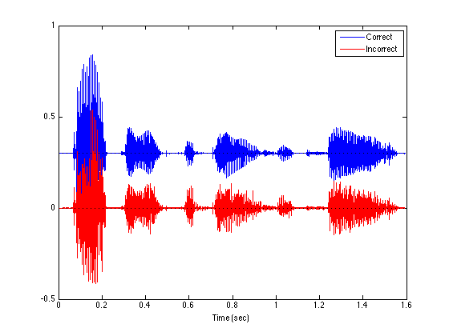
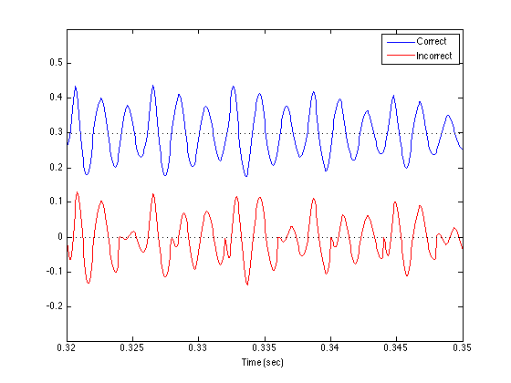

[x1, Fs] = wavread('author.wav'); [x2, Fs] = wavread('author_output.wav'); [x3, Fs] = wavread('author_output_blocking.wav'); N = length(x1); n = 0:N-1; t = n/Fs;
N3 = length(x3); OFFSET = 0.3; figure(1) clf % plot(t, x1, t, x2 - 0.5, t(1:N3), x3 - 1.0, 'k') plot(t, x2+OFFSET, 'b', t(1:N3), x3, 'r', [0 t(end)], [0 0], 'k:', [0 t(end)], [0 0]+OFFSET, 'k:') legend('Correct', 'Incorrect') xlabel('Time (sec)')
xlim([0.32 0.35]) ylim([-0.3 0.6]) orient landscape print -dpdf compare_signals